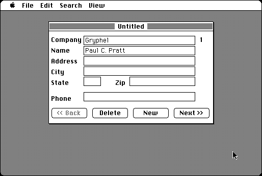

Download
AddressBook.zip (53K) Big Al Address Book 1.0 repackaged into a zipped hfs disk image and checksum file. The disk image can be mounted with Mini vMac.
AddressBook.sit (49K) Big Al Address Book 1.0 in the original format.
copyright: Al Staffieri Jr.
mod date: Sep 19, 1995
license: shareware
official url :
Al's Older Macintosh Software
An “easy to use personal address book.” It is pleasingly simple, but could use better error checking. The web page warns not to use commas, but I think it is actually double quotes that it can't handle. Printing with no printer selected will immediately terminate the program. For “System 4.1 or better”.

If you find these downloads useful, please consider helping the Gryphel Project, which hosts them.
Here are the md5 checksums for the downloads, signed with Gryphel Key 5:
--------- GRY SIGNED TEXT --------- 73b4f4da71b0fc75b9e121135c8ad304 AddressBook.zip a4b2962d8e2b99cfd9903a18a8079bc6 AddressBook.sit ------- BEGIN GRY SIGNATURE ------- Gry/4Xa8CFcUzxdN/Gg6uV/nW+jhYXH/qkjBLM3iuzQSlhpiTL1E5kpdg9vCfJ3y 8tmtid4BfhnuExsoyPvhWES0qzcDxuOgD564cm+gp6VUQoPprBEgT4QcmHbI+dVY QAeOtwTLfp/YQ0VuGEEllsf/S6MsGDbQQ9GUBC9kThFcYUyK2QN2ID0XnommDtX9 -------- END GRY SIGNATURE --------